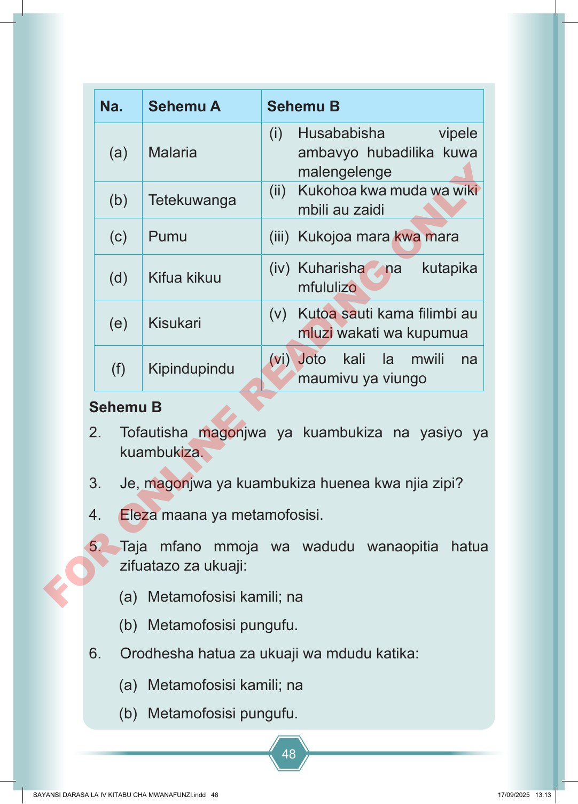

48 Na. Sehemu A Sehemu B (a) Malaria (i) Husababisha vipele ambavyo hubadilika kuwa malengelenge (b) Tetekuwanga (ii) Kukohoa kwa muda wa wiki mbili au zaidi (c) Pumu (iii) Kukojoa mara kwa mara (d) Kifua kikuu (iv) Kuharisha na kutapika mfululizo (e) Kisukari (v) Kutoa sauti kama filimbi au mluzi wakati wa kupumua (f) Kipindupindu (vi) Joto kali la mwili na maumivu ya viungo Sehemu B 2. Tofautisha magonjwa ya kuambukiza na yasiyo ya kuambukiza. 3. Je, magonjwa ya kuambukiza huenea kwa njia zipi? 4. Eleza maana ya metamofosisi. 5. Taja mfano mmoja wa wadudu wanaopitia hatua zifuatazo za ukuaji: (a) Metamofosisi kamili; na (b) Metamofosisi pungufu. 6. Orodhesha hatua za ukuaji wa mdudu katika: (a) Metamofosisi kamili; na (b) Metamofosisi pungufu. SAYANSI DARASA LA IV KITABU CHA MWANAFUNZI.indd 48 SAYANSI DARASA LA IV KITABU CHA MWANAFUNZI.indd 48 17/09/2025 13:13 17/09/2025 13:13 F O R O N L I N E R E A D I N G O N L Y